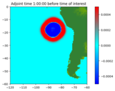

Test Gallery¶
1-dimensional advection¶
Directory: `$CLAW/amrclaw/examples/advection_2d_square`
Advecting square with periodic boundary.
Adjoint problem¶
Directory: `$CLAW/geoclaw/examples/tsunami/chile2010_adjoint/adjoint`
Simple model of the 2010 tsunami using adjoint flagging.

eta_init and force_dry¶
Directory: `$CLAW/geoclaw/examples/tsunami/eta_init_force_dry`
Tsunami with subsidence and dry regions below sea level.